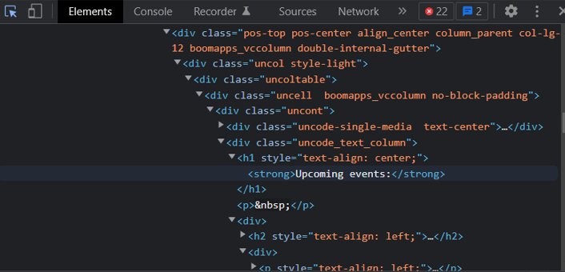

HTML, CSS, Javascript: an analogy
Before it's given any content, a website is a bit like an empty house. No rooms, no floors, nothing. Think of HTML as a builder and CSS as an artist. HTML will give your house a structure, by building floors, rooms, furniture, etc. Then CSS will make your house colourful, organised and pretty. It will paint the walls, organise the layout of each room, make your furniture smaller or bigger... Easy! Finally, Javascript is kind of the handyman who will take care of everything related to interacting with your house. Like opening doors, closing windows, switching the lights on and off, taking a shower...

JS control flow and loops
Tech explanation
Control flow in JS is how your computer runs code from top to bottom. It starts from the first line and ends at the last line, unless it hits any statement that changes the direction. An example of such statements would be loops. Loops run based on if a certain condition is true. As long as it stays true, the code is going to keep executing.
Non-tech translation
I'm French, and I love crêpes! So today I'm going to keep making crêpes, following the recipe from top to bottom, until I run out of milk. As long as I've got milk, the crêpes are going to keep being made.
- I'm making my first batch of crêpes.
- Still got milk? Yup.
- Let's make another one.
- I'm making my second batch of crêpes.
- Still got milk? Oui!
- Okay, third batch incoming.
- I'm making my third batch of crêpes.
- Oh no, no milk left.
- No more crêpes.

Source: Medium
What is the DOM?
Remember: When you make a website, HTML defines the structure, CSS provides the appearance and styling, and JS deals with interactivity. Now here comes the real MVP of the web: the DOM! It provides the missing link that ties your HTML, CSS and JS together. It's like a gateway to all the HTML and CSS elements that the browser uses to display the page, and it also has functionality that allows JS to interact with those elements.
We can easily interact with the DOM by using the Chrome DevTools. Here's an example from the EDA website ("News and Events section")
The DevTools shows you all the details of the page you're looking at, from HTML elements to CSS styles, but also many more things that we don't need to worry about now. The best part is that you can also use it to actually make changes to the page and see them live, all thanks to that gateway provided by the DOM. Let's change the content of our EDA page. All we need to do is head over to the DOM-side HTML elements using the DevTools, and let our creativity do the rest.
Not to worry. These changes don't affect the actual website and they'll disappear after refreshing the page, because what you see is a local copy of the code, not the actual source code.
Source: Kirupa
Accessing data from objects vs arrays
Objects
Think of objects as ID cards. They're used to represent something that is made up or can be defined by a set of characteristics.

In tech language, these characteristics are called properties. They consist of a key and a value. For example,
name is our key and 'Jodie' is our value.
To access properties of an object, we use the keys and dot (or bracket) notation, like so:

Arrays
Think of arrays as big baskets in which you can put items in individual compartments. Each of these compartments are numbered and ordered, and they're called indexes.

We can't actually see those numbers, but now that we know they're here, we can use them to access our array's data with bracket notation. Beware! never forget this very interesting programming trick: indexes start counting at 0, not 1, like we poor humans do.
Source: Medium
JS functions
A function is a block of reusable code designed to perform a particular task. Remember my crêpes? I needed a recipe to make them. Well, a function is a bit like a recipe that you can reuse over and over again, that performs the same set of actions using a set of ingredients. When you follow a recipe:
- You start with a specific set of ingredients (the function parameters)
- You perform a specific procedure with those ingredients (the function body)
- You get a reliable product in the end (the
return, or whatever else the function is written for)
Okay, calling that function will return milkeggsflour, which doesn't make any sense. But you got the idea, right? Combining milk eggs and flour
will "return" crêpes. Now you can reuse the recipe function with any ingredient, all you need to do is filling in the parameters (you can think of them as
placeholders, if it helps).
Functions are useful for many reasons, but the main one is their reusability. Once a function is written, it can be called multiple times from within the program and avoids duplicated code. This allows a very important concept in programming: DRY (“Don’t Repeat Yourself”). Functions can also be shared with other programs, reducing the amount of code that has to be written from scratch each time. And we all know that good developers are lazy.
Source: LearnCpp and Codeanalogies